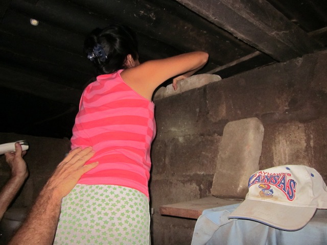
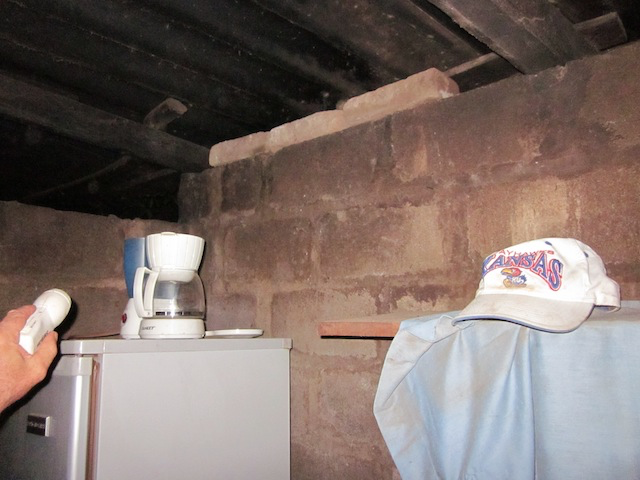
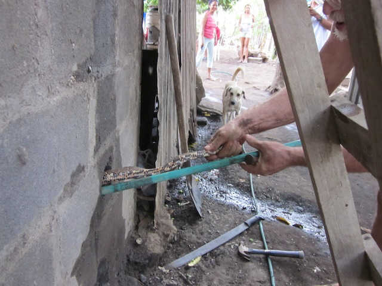
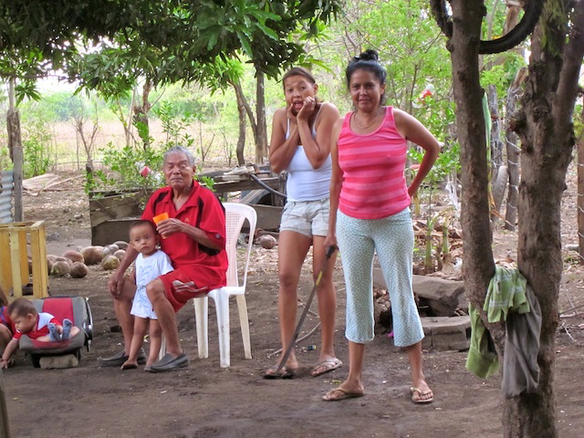
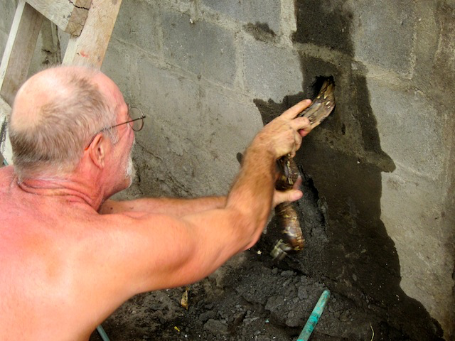
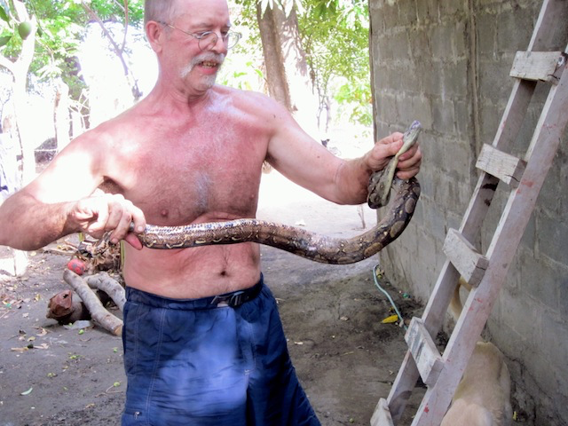
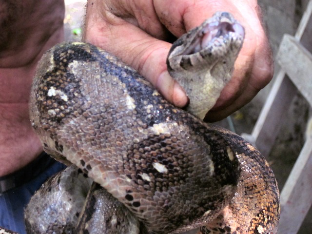
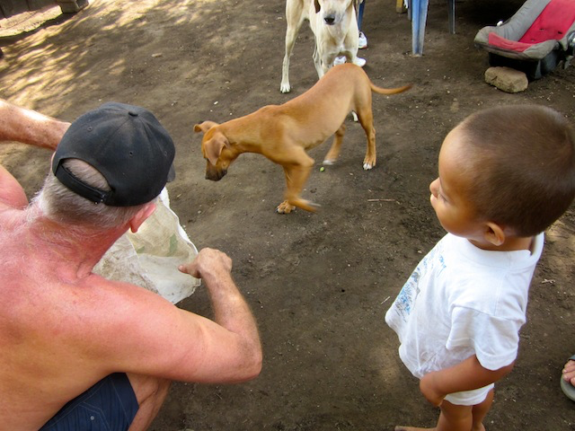

Unpublished Writing
My Husband: The Snake Whisperer
April 30, 2013
"When a woman teams up with a snake a moral storm threatens somewhere."
Marina shouted across the fence, "Ron, Ron ven aquí rápidamente! Hay una serpiente en mi cocina." "A snake?" Ron shouted back. As usual, it was after dark on a Sunday night, and we lost our electricity. I swear, the weekend electricity guys flip a switch every Sunday night leaving us in the dark for two hours. I picture them snickering and snoring in the Union Fenosa office.

Ron and I grabbed a couple of flashlights and squeezed through the barbed wire fence separating us from Marina's house. Marina was standing on a plastic chair in her kitchen waving the only light she had, her cell phone. "Quick, help me trap the boa constrictor in the wall," she ordered. "We'll kill it tomorrow." Stumbling around the dirt floor kitchen, we spotted some bricks and covered the top holes in the cement block wall. Trapped for the night! We lent Marina a flashlight and whispered, "Sweet dreams" (because their three grand babies were sleeping) and headed home shaking our heads wondering what the next morning would bring.

Early the next morning Marina shouted, "Ron, Ron ven aqui." With machete in hand, she was determined to capture and kill the giant boa sleeping in her kitchen wall. Now, we are not snake killers. If they are not poisonous, we trap them and set them free. Boas are beautiful and they eat rats, which is probably why it was in her kitchen wall. But, tell that to Marina, a protective grandmother. A moral storm was brewing.

With a mirror, flashlight, and a ladder, Ron spotted the boa near the top of the hole. He tried pouring warm water down the hole to flush out the boa, but it only aggravated the enormous snake and it retreated farther down. So, Ron chipped a small hole in the cement block, found his tail and started p-u-l-l-i-n-g. Meanwhile, Adioska was screaming, Marina had her machete in her hand, and Don Jose was comforting his grand babies. This picture is priceless. You can just feel the fear!

But, Ron kept p-u-l-l-i-n-g. That was one strong boa!

Success! Isn't it a beauty! Marina rushed forward with her machete. "No, Marina," I explained. "We're not going to kill it. We'll put it in a sack and take it far, far, away from your house."
Marina wasn't sure. "You'll take it far away?" she whimpered. "Certainly," we promised. Meanwhile the boa was getting restless. It tried to wrap around Ron's arm and he lost his grip on the boa's head. It only bit him once. Jose ran forward with a big sack, and Ron dropped it comfortably into its temporary home.

"I have no fear of losing my life. If I have to save a koala or a crocodile or a kangaroo or a snake, mate, I will save it." - Steve Irwin
"Stephen, do you want to see the boa?" Ron said reassuringly. But, Stephen ran for his life in the opposite direction. "Dustin, do you want to see the boa?" Dustin took a few tentative steps toward the sack. He peeked in and soon wanted to touch it. Maybe a new snake whisperer is born.

Ron took the wiggling sack to the new airport. Just as he set the sack on the ground to release the boa, a big, fat rat ran across the path. "Perfect," Ron told the boa. It looks like it's lunch time.

This story is one of many. The full journey is in the book.
Get The Monkey Lady's Gift